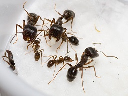

Муравьи-жнецы
Краткое описание
Латинское название — Messor structor. По-другому их называют муравьи-жнецы. Откуда пошло такое название? Жатва — это процесс уборки злаковых культур. И именно эти муравьи собирают зёрна с полей, подобно мужчинам, жнущим в поле хлеб. Семьи муравьев Messor structor моногинны, т.е. в колонии присутствует только одна яйцекладущая матка. Это также упрощает уход за муравьями.
Характеристики
- Артикул: 103219941
- Название вида: messor structor, степные жнецы
- Сложность: для новичка
- Размеры: 5-14 мм
- Солдаты: есть
- Рацион: семена растений
- Численность: до 5 тыс. особей
- Зимовка: не требуется
- Формикарий: гипсовый, насыпной, акриловый
- Особенности: прост в содержании, не требует живого корма, с содержанием справится даже ребенок
Полное описание
Муравьи-жнецы в первую очередь интересны своим внешним видом — ведь большинство видов этого рода отличаются большими размерами и красивыми большеголовыми солдатами (т.н. полиморфизм рабочих). В колонии есть разнообразные формы рабочих — от очень мелких «нянек», которые ухаживают за расплодом, до большеголовых солдат, чья задача — охранять гнездо и перемалывать семена растений
Муравьи-жнецы обитают в степных и пустынных районах, где мало осадков и жарко летом. Для того, чтобы выживать в таких сложных условиях, муравьи запасают семена, которые складируют в верхних сухих камерах муравейника. От недостатка воды муравьи спасаются, прокладывая длинные тоннели до грунтовых вод. Так, даже во время долгой засухи, они имеют доступ к влаге. Чтобы не пострадать от жары, муравьи выходят на промысел вечером, когда жара спала, и можно безопасно собирать пищу.
В природе можно встретить разнообразные виды жнецов, как по размерам и цвету, так и по поведению. В тропическом поясе (Китай, Индия) водятся несколько видов жнецов, которые не собирают семена и питаются в основном насекомыми. На территории России можно встретить Messor structor и denticulatus, на юге Европы часто можно заметить красноголовых Messor barbarus и черных Messor capitatus. Во всех регионах лёт жнецов происходит весной, после дождей. Для России это конец апреля-начало мая.
В целом, жнецы — довольно спокойный и не агрессивный род муравьев. Никогда не атакует другие муравейники, только защищает собственную кормовую территорию. В домашних условиях с ростом колонии растет агрессивность и активность, если арена недостаточно велика или чего-то не хватает (семян или воды), начинают лезть напролом через антипобег, но преодолевают его очень редко и с большим трудом. В домашних условиях активны круглые сутки, но ночью возрастает активность на арене.
Информация для заказа
- Наличие: есть
- Количество: Матка и 16-40 рабочих
- Цена: 1200 ₽
- Стоимость доставки: 300 руб. Возможен самовывоз.